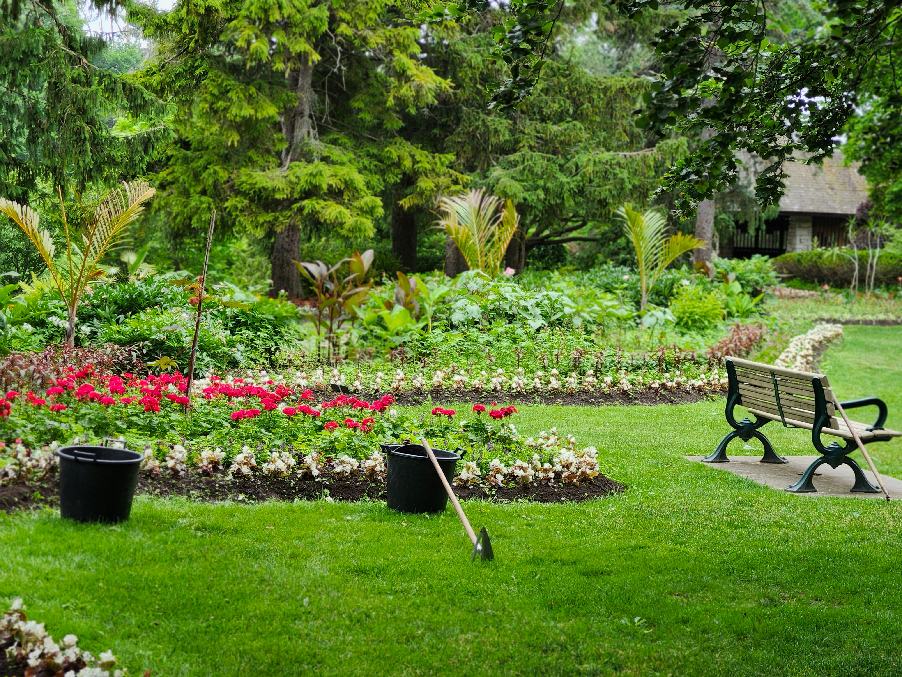
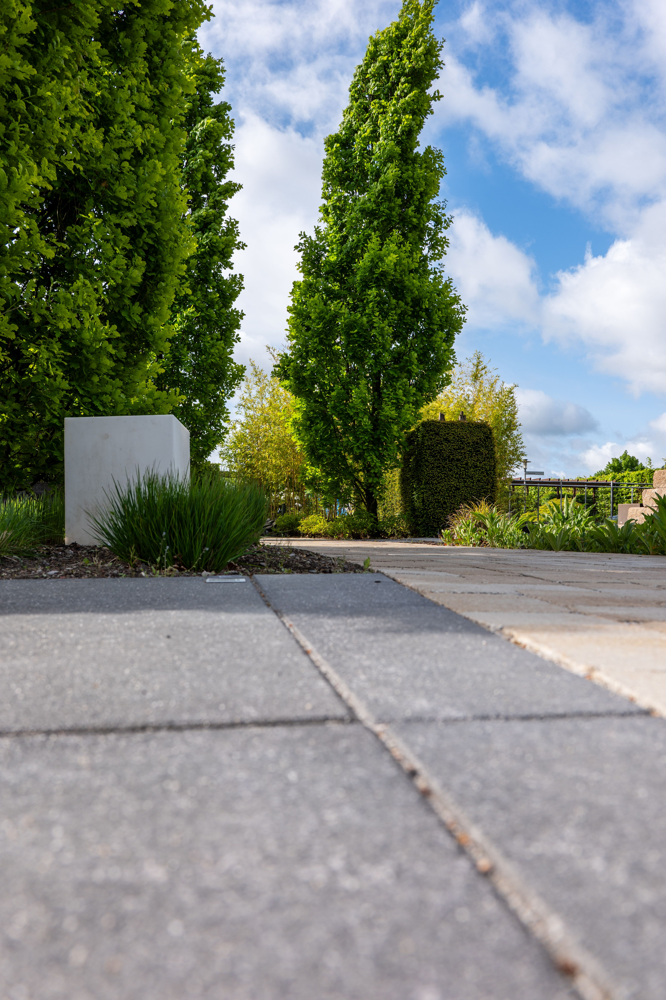

Quelques chantiers menés par EB SERVICE, du simple passage d'entretien à la remise en état complète.
Une entrée de maison laissée sans entretien : herbes hautes entre les pas japonais, massifs envahis, pelouse dégarnie. Après intervention, le cheminement est de nouveau dégagé, les arbustes remis en forme et la pelouse nette.


Les deux prises de vue n'ont pas le même cadrage : l'entrée est photographiée de plus loin après intervention.

Un jardin structuré par ses haies : la régularité des passages fait toute la différence. Ici, taille au carré sur l'ensemble du périmètre, topiaire central remis en forme et tonte des espaces enherbés.
Haies, pelouses, massifs et arbres : un aperçu des végétaux et des configurations sur lesquels nous intervenons au quotidien.
 Taille de haies
Taille de haies
 Entretien de pelouse
Entretien de pelouse
 Allées & abords
Allées & abords
 Haies de propriété
Haies de propriété
 Massifs & plantations
Massifs & plantations

ÉlagageLes photos de cette galerie sont des visuels d'illustration. Les chantiers EB SERVICE sont présentés en haut de page.
Décrivez-nous votre terrain : nous passons l'évaluer et vous remettons un devis gratuit.
06 63 84 64 05 Demander un devis en ligne